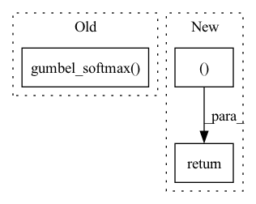

Pattern ID :3018

Before Change
// sample = (hard - soft).detach() + soft
// else:
// sample = soft
sample = F.gumbel_softmax(logit, temperature, hard)
// sample = logit
// [h*w, N, c] <- [h*w, N, k] @ [k, C]
quantized = codebook(sample)
After Change
codes.append(sample.argmax(-1).permute(1, 0).reshape(n, h, w))
logits.append(logit.reshape(n, h, w, k))
allCodewords.append(codewords.t())
return quantizeds, codes, logits, allCodewords
class VQuantizer(nn.Module):
def __init__(self, k: List[int], cin: int, rate: float = 0.1):
In pattern: SUPERPATTERN
Frequency: 3
Non-data size: 3
Instances
Fragment ID: 16370003
Project Name: xiaosu-zhu/mcquic
Commit Name: 96e69f8763c2cf2c9cf0695159db17ddf4e0c857
Time: 2021-02-15
Author: xiaosu.zhu@outlook.com
File Name: src/mcqc/models/quantizer.py
M Class Name: TransformerQuantizer
N Class Name: TransformerQuantizer
M Method Name: forward(4)
N Method Name: forward(4)
M Parent Class: nn.Module
N Parent Class: nn.Module
M File Name: src/mcqc/models/quantizer.py
N File Name: src/mcqc/models/quantizer.py
M Start Line: 280
M End Line: 335
N Start Line: 280
N End Line: 339
'>
Before Change
def forward(self, logits, samples, soft):
if samples is None:
return self.gumbel_softmax(logits, self._temperature, self._eps, hard=True)
else:
return -torch.sum(-samples * F.log_softmax(logits, -1), -1)
After Change
else:
// Reparametrization trick.
ret = y_soft
return ret, y_soft
'>
Fragment ID: 16370005
Project Name: xiaosu-zhu/mcquic
Commit Name: e12be331e275549e5b8a7ef6a7c8dbf6d4e387bf
Time: 2021-04-08
Author: xiaosu.zhu@outlook.com
File Name: src/mcqc/layers/gumbelSoftmax.py
M Class Name: GumbelSoftmax
N Class Name: GumbelSoftmax
M Method Name: forward(5)
N Method Name: forward(4)
M Parent Class: nn.Module
N Parent Class: nn.Module
M File Name: src/mcqc/layers/gumbelSoftmax.py
N File Name: src/mcqc/layers/gumbelSoftmax.py
M Start Line: 40
M End Line: 44
N Start Line: 8
N End Line: 21
'>
Before Change
// sample = (hard - soft).detach() + soft
// else:
// sample = soft
sample = F.gumbel_softmax(logit, temperature, hard)
// sample = logit
// [h*w, N, c] <- [h*w, N, k] @ [k, C]
quantized = codebook(sample)
// quantized += torch.randn_like(quantized)
After Change
quantizeds.append(deTransformed)
codes.append(sample.argmax(-1).permute(1, 0).reshape(n, h, w))
logits.append(logit.permute(1, 0, 2).reshape(n, h, w, k))
return quantizeds, codes, logits
class TransformerQuantizerRein(nn.Module):
def __init__(self, k: List[int], cin: int, rate: float = 0.1):
'>
Fragment ID: 16370004
Project Name: xiaosu-zhu/mcquic
Commit Name: 594ba7cd5c9d147e95ba5bd0b842270302dea2a2
Time: 2021-03-02
Author: xiaosu.zhu@outlook.com
File Name: src/mcqc/models/quantizer.py
M Class Name: TransformerQuantizer
N Class Name: TransformerQuantizer
M Method Name: forward(2)
N Method Name: forward(4)
M Parent Class: nn.Module
N Parent Class: nn.Module
M File Name: src/mcqc/models/quantizer.py
N File Name: src/mcqc/models/quantizer.py
M Start Line: 282
M End Line: 342
N Start Line: 295
N End Line: 320